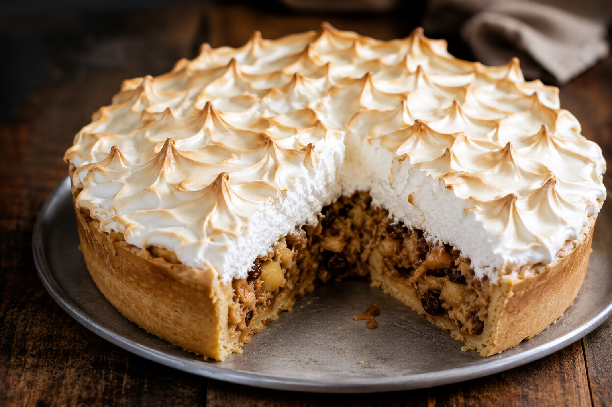
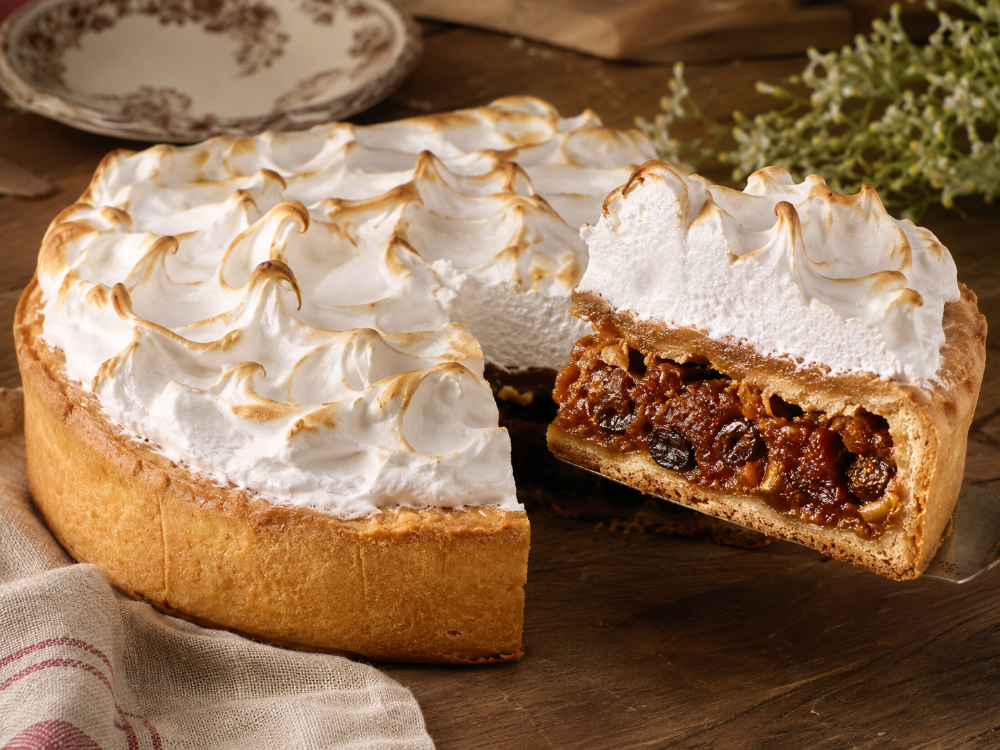
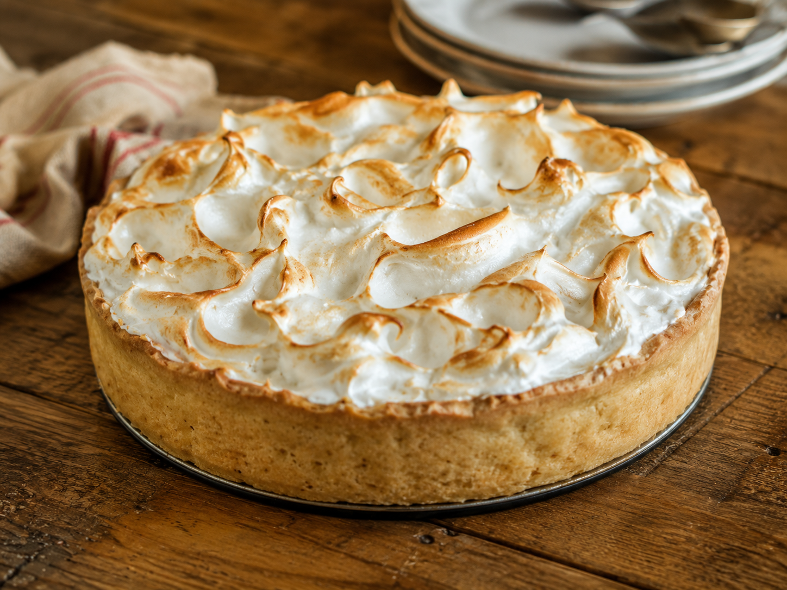
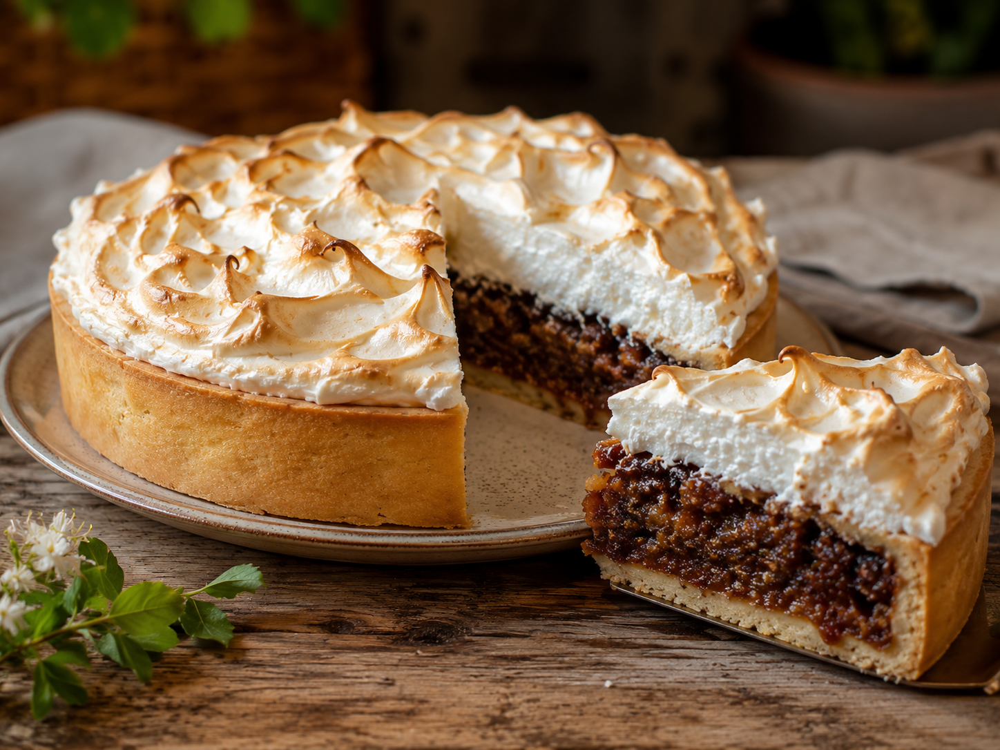
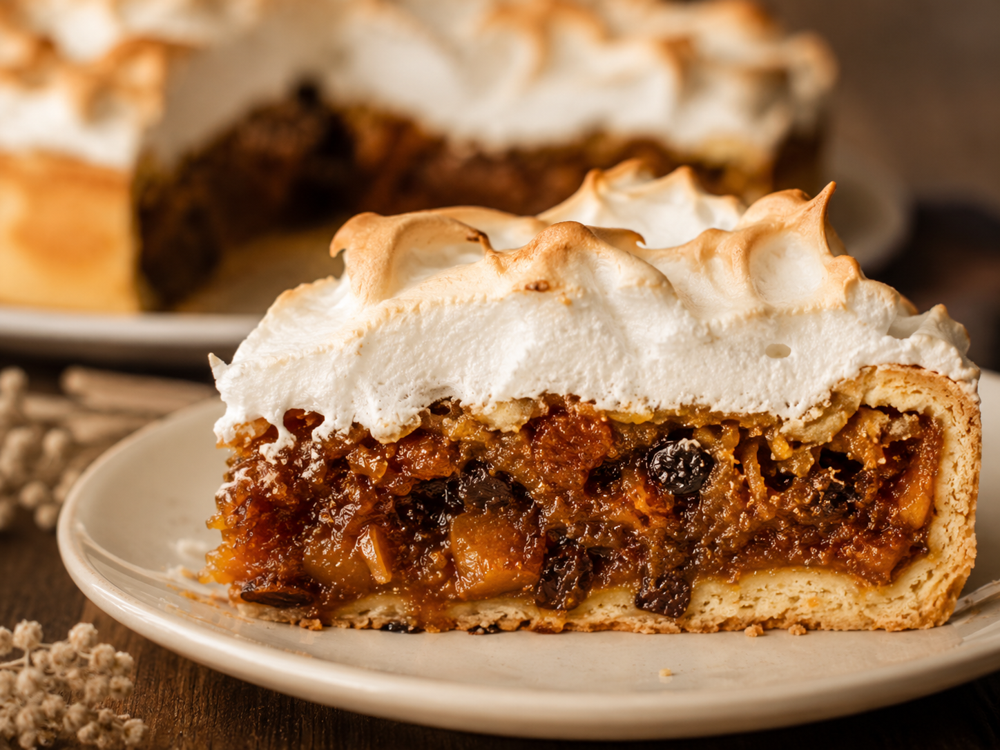

Pastel de novia
También conocido como pastel de bodas, es un postre emblemático del NOA. Combina una masa dulce, un relleno especiado con frutas y una cobertura de merengue dorado.

Origen e identidad
Esta preparación fusiona la cocina del norte argentino con influencias sirio-libanesas traídas por inmigrantes. Es tradicional en celebraciones y bodas, donde se destaca por su contraste entre relleno especiado, masa dulce y merengue.
Ingredientes
Para el relleno
- 1/4 kg de carne magra
- 1/4 kg de pelones
- 100 g de pasas de ciruela
- 100 g de pasas de uva, opcional
- Canela en rama
- 1 cucharadita de agua de azahar
- 100 ml de vino moscato
- 200 g de azúcar
Para la masa
- 650 g de harina leudante
- 300 g de manteca
- 1 cucharadita de agua de azahar
- 200 g de azúcar
- 1 pizca de sal
- 1 cucharadita de canela en polvo
- 150 ml de vino moscato
Para el merengue
- 1 medida de clara de huevo
- 2 medidas de azúcar
- Jugo de limón
- 1 cucharadita de azúcar impalpable
Preparación
- Colocar los pelones en remojo para hidratarlos.
- Cocinar la carne magra y unirla con los pelones, las pasas, la canela, el agua de azahar, el vino moscato y el azúcar.
- Mezclar el relleno hasta que los sabores queden integrados y reservar.
- Para la masa, colocar en un bol la harina leudante, la manteca a temperatura ambiente, el agua de azahar, el azúcar, la sal, la canela y el vino moscato.
- Unir hasta obtener un bollo tierno.
- Formar tortitas o una base de tarta, según la presentación elegida.
- Colocar el relleno sobre la masa.
- Cocinar en horno caliente hasta que la masa esté cocida.
- Retirar del horno y cubrir con merengue.
- Volver a llevar al horno unos minutos para dorar y cocinar el merengue.
Presentaciones



